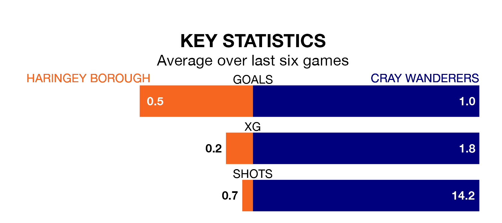

Struggling Haringey Borough face Cray Wanderers at Coles Park on Saturday looking to build on a win in their last league outing.
After securing all three points with a 1-0 victory over Cheshunt on March 9, Haringey sit 20th in the Isthmian Premier Division.
They travel to play a Cray side 13th in the standings, who lost in their last match, 2-1 against Potters Bar Town, on Wednesday.
In the last 10 years, Haringey and Cray have played each other on eight occasions. They won two each, and they drew four times.
On average, Haringey scored 1.5 goals and Cray 2.0 in those matches.
Their last meeting was on December 10, when they played out a 3-3 draw.
Haringey are in mixed form in the Isthmian Premier Division, with two wins and a draw from their last six games.
With three wins and a draw over that period, Cray's form is better – they have taken 10 points from 18, compared to Borough's seven.
With 27 goals in 33 games so far this season, the home side are the league's second-lowest scorers with 0.8 goals per game. And they are conceding more than average, letting in 59 goals at a rate of 1.8 per game.
Wanderers are also below average scorers, with 1.2 goals per game, compared to a league average of 1.6. They have conceded 1.5 goals per game.
Updated: 15:10 (UTC), 15/03/24